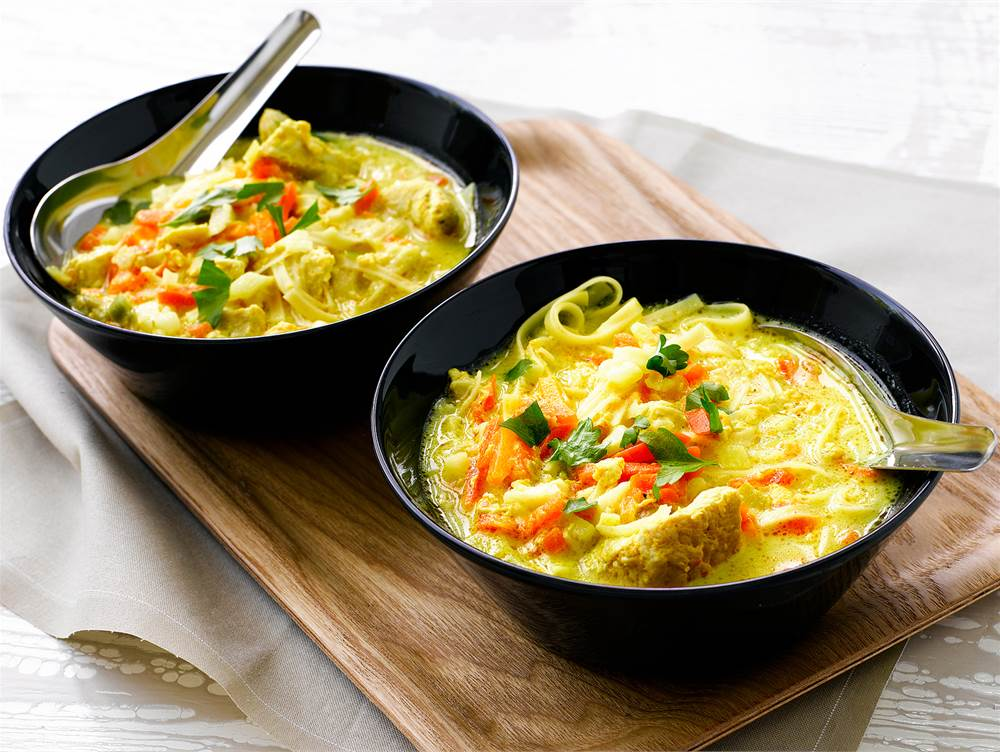

Chicken Noodle Soup

Chicken noodle soup is an excellent weekday meal because it is quick to
prepare and tastes good to the whole family.
Ingredients
- 2 tbsp Valio Oivariini liquid butter-blend
- 300 g honey-marinated chicken fillet strips
- 2 bags (250 g each) vegetable strips
- 12 dl water
- 2 chicken stock cubes
- 90 g egg noodles
- ½ pack (250 g) Valio Koskenlaskija traditional melted cheese
- 1 tsp unsalted lemon pepper
- ½ dl chopped parsley
Steps
-
Fry the chicken strips in Oivariini butter. Add the vegetable strips and
let them cook for a moment.
-
Pour in water and add the chicken stock cubes. Boil for about 5 minutes.
-
Add the crumbled noodles and cheese in small pieces. Stir until smooth,
season and cook until done.
- Sprinkle chopped parsley on top.